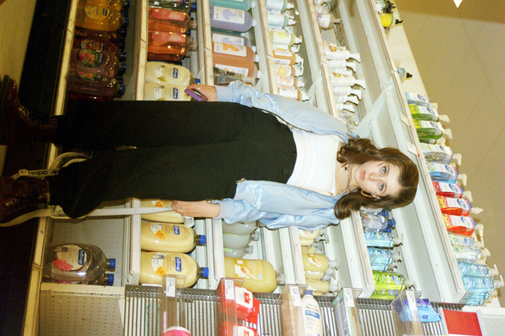
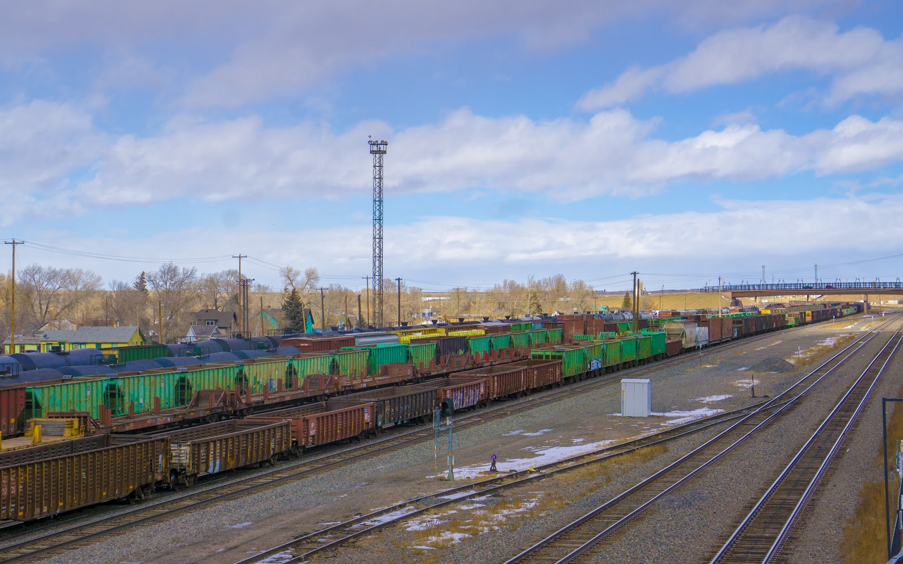

quick design i made in illustrator with a picture of me and my friends because i hate corona spotify playlist cover i made from a film photo i took  photoshopped picture using liquify effect from third quarantine photoshoot drawing of a baby frog and a baby snake in love on the inside of bubble wrap packaging  quarantine day 22 photoshoot close up portrait  icee machine at the gas station shot on film  friends and the mountains at the start of quarantine on film  quarantine day 21 photoshoot with angry lemons  quarantine day 21 photoshoot with my plant named kris covering my eye  2 by 2 inch art piece for a school project  process and sketchbook for piece titled "blameless" for school  vibey digital shot from camp my camp cit shelf (the essentials)  griffindor with acrylic paint for potter cup at camp  photoshopped eboy peppa pig  photo for photo 1 passion project at school  photo for photo 1 passion project at school part of my photo 2 final for the prompt "from the hip"  part of my photo 2 final for the choice prompt  part of my photo 1 final, inspired by richard avedon |
quick design i made from a picture of my friends while testing out tools in illustrator spotify playlist cover i made from a photo i took while dyeing my hair black  picture from third quarantine photoshoot with glow in the dark stars from ebay  photoshopped collage from a self portrait with dripping eye and snakes coming out of my head  quarantine day 22 photoshoot with toilet paper lamp star  quarantine day 22 photoshoot of me taking a picture  frozen rose on a cold night shot with film  quarantine day 21 photoshoot wearing hat by twitter user animatedtext  quarantine day 21 photoshoot with photoshopped red eyes  playing with beads after carnival night at camp almost a gatorade ad on a hike at camp  mirror selfie with "dont be a jerk" postcard by barbra kruger  poster i made for my school's comedy show (that i was also in)  art project for school based on the actions of the president in 2020 and a 2016 HRC quote  some props used for cit evening activity night at camp  photoshopped egirl marge simpson  photoshopped vsco girl nemo photo for photo 1 passion project at school photo for photo 1 passion project at school  part of my photo 2 final for the prompt "on my way to school" |
a spotify playlist cover i had fun making  picture of my friend that a photoshoppsed lightning effect on to with photoshop  quick summer 2020 graphic i made with illustrator while bored in quarantine  picture from third quarantine photoshoot with glow in the dark stars from ebay  quarantine day 22 photoshoot using a slinky as a shadow over my face  quarantine day 22 photoshoot portrait  the target soap isle shot on film with friends  quarantine day 21 photoshoot with one angry lemon  quarantine day 21 photoshoot wrapped in a blanket  throwing a ping pong ball after carnival night at camp  friends by the lake on a hike at camp  goth themed cake i made for my 17th birthday  art project for school, titled "death at the hands of the law"  my wall of random art at camp i glued rose petals to my face with a glue stick and took a pictue  photoshopped shrek with abs (very sex c)  photoshopped skater boy ferb  picture of my dog for photo 1 photo dailies project  photo for photo 1 passion project at school part of my photo 2 final for the prompt "abstraction"  part of my photo 2 final for the prompt "ive never been here before" |